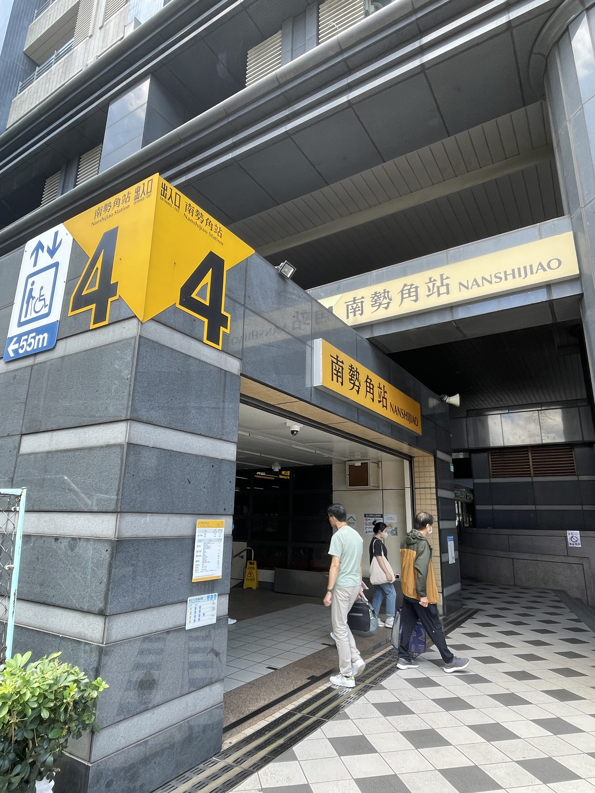
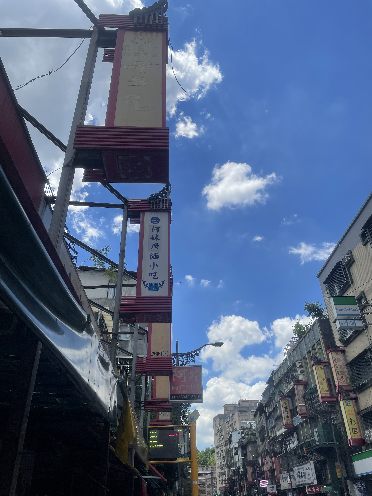
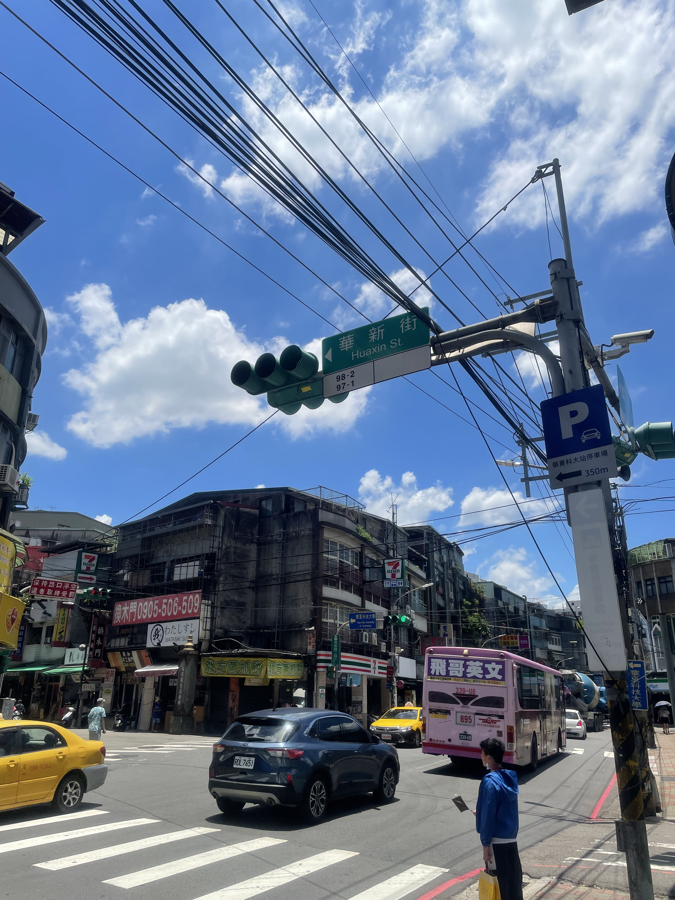
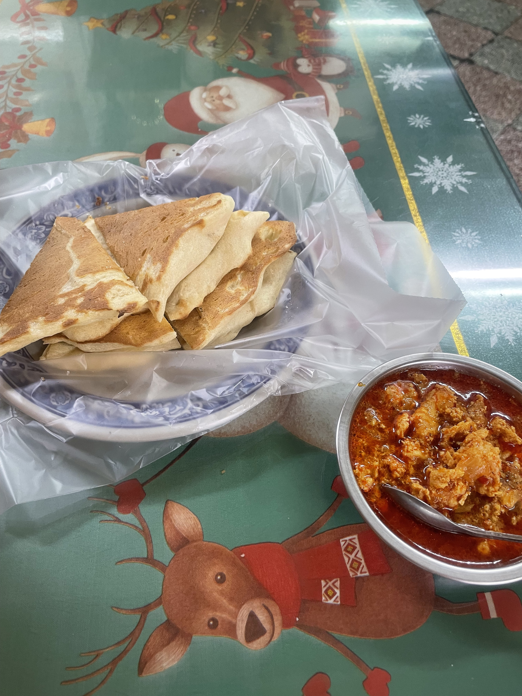
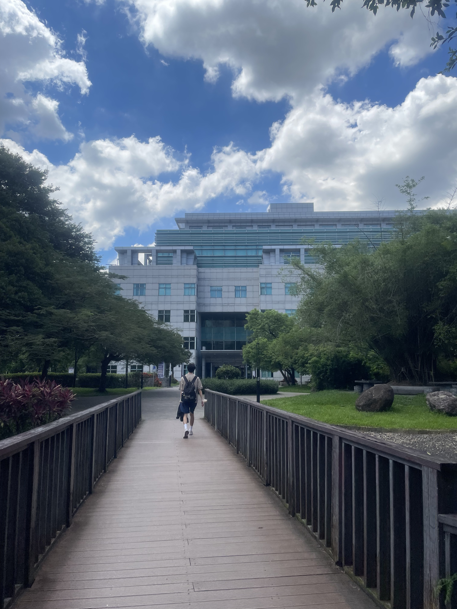

新北市中和區
基本資訊
位於新北市中部偏南，是新北市人口密集且發展成熟的行政區之一，與臺北市萬華區、文山區及永和區相鄰，地理位置緊密連結大臺北都會核心。由於與臺北市僅一河之隔，中和長期以來扮演重要的住宅與通勤角色。 中和的發展歷程反映戰後都市快速擴張的軌跡，早期以農業聚落為主，隨著工業區設立與人口移入，逐漸轉型為高度都市化的生活區。區內街廓密集、住宅與商業混合，呈現典型的都會邊緣城市樣貌。 在交通方面，中和擁有捷運中和新蘆線與環狀線，並透過多條主要幹道與橋梁連接臺北市，使區內居民具備高度通勤便利性。完善的交通網絡也促進商業活動與生活機能的集中發展。
主要景點
- 烘爐地南山福德宮，以土地公信仰聞名，座落於山區制高點，視野開闊，能俯瞰大臺北夜景，是宗教參拜與觀景兼具的重要場所。
- 中和左岸河濱公園沿著新店溪規劃完善的自行車道與步道，提供散步、運動與休憩空間，也成為串聯中和與永和的重要水岸綠帶。
推薦景點
| 華新街
是臺灣最具代表性的「南洋街」之一，以緬甸、泰國、印度等東南亞文化聚集而聞名。由於早期有大量來自緬甸的華僑與移民在此定居，逐漸形成獨特的族群聚落，使華新街成為臺灣少見、具有高度異國風情的街區。 街道沿線聚集許多南洋料理餐廳、香料雜貨店、佛教與印度教相關店鋪，以及販售進口食材與宗教用品的商家，呈現出與周邊都市景觀截然不同的文化氛圍。每逢節慶或假日，街區更顯熱鬧，吸引許多民眾前來體驗異國飲食與文化。 華新街不僅是美食聚集地，更是移民生活與文化交流的重要場域，反映中和區多元族群共存的城市特色，也展現臺灣社會在全球化背景下形成的在地多元文化樣貌。
| 台灣圖書館
圖書館提供豐富的書籍、期刊、電子資源及閱讀空間，並舉辦各類讀書會、講座與親子活動，兼具學習、資訊查詢與社區教育功能。 館舍設計重視開放性與舒適性，閱讀區域採自然採光，並規劃成人區、兒童區與多功能空間，使各年齡層的民眾皆能方便使用。圖書館同時與社區資源連結，鼓勵民眾參與文化活動，成為社區學習與交流的中心。 整體而言，中和區的圖書館不只是書籍收藏的場所，更是提升社區文化素養、促進終身學習以及提供市民休閒與學習並行的公共空間。





